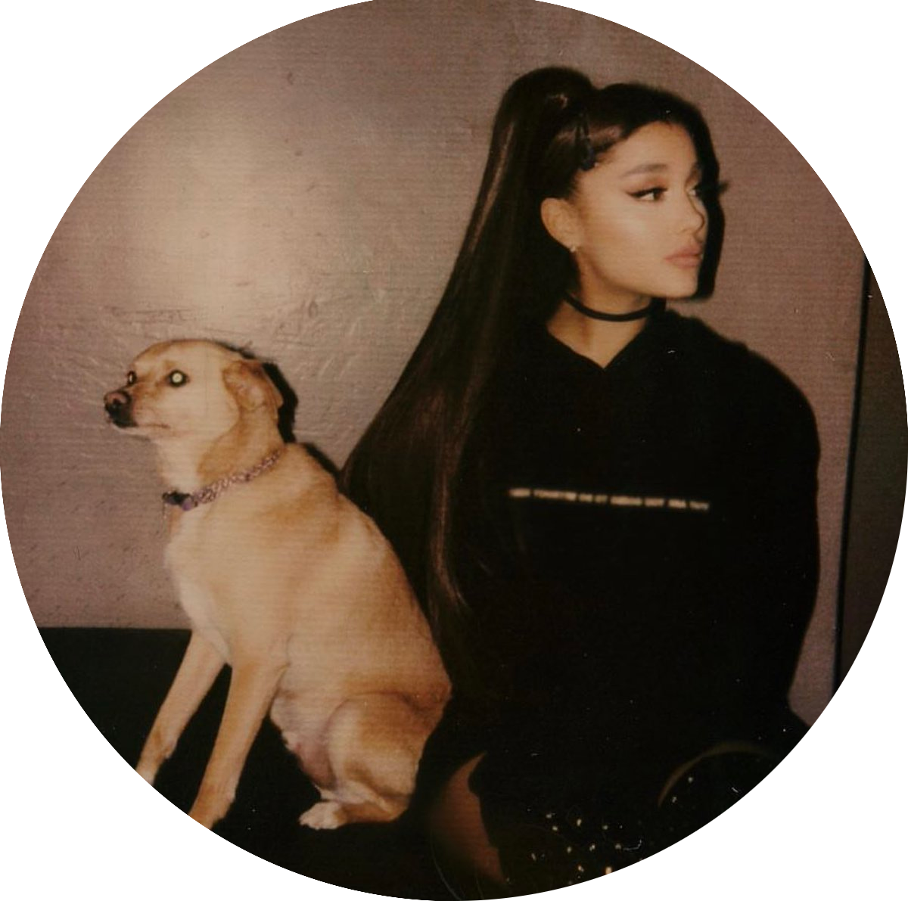

Um pouco sobre Ariana Grande...
Ariana Grande-Butera nascida em Boca Raton(Flórida), em 26 de junho de 1993, conhecida profissionalmente como Ariana Grande, é uma cantora, compositora, instrumentista, produtora musical, dançarina, atriz, dubladora e apresentadora norte-americana. Iniciou sua carreira como atriz na TV em Victorious ao lado de Victoria Justice, em oito anos de carreira solo, ela venceu dois Grammy Awards em um total de doze indicações.
Sua carreira musical começou com a trilha sonora da série Victorious. Desde então, Grande lançou seis álbuns, sendo o primeiro Yours Truly (2013), que alcançou o primeiro lugar na parada de álbuns americanos, a Billboard 200. O feito também foi conquistado em mais dois lançamentos de Grande, My Everything (2014) e Sweetener (2018). Em 2016, com seu terceiro disco, Dangerous Woman, ela alcançou o segundo lugar da mesma parada. Em 2019, a cantora entregou seu quinto álbum de estúdio, no dia 8 de fevereiro, intitulado Thank U Next. E no dia 30 de outubro de 2020 lançou seu sexto álbum de estúdio, Positions.
Seus prêmios incluem três American Music Awards, três MTV Europe Music Awards, nove MTV Video Music Awards e quinze indicações ao Grammy, vencendo nas categorias Melhor Álbum Vocal de Pop, em 2018, com o seu quarto álbum de estúdio Sweetener, e Melhor Desempenho de Pop em Duo ou Grupo, pela canção "Rain on Me". Em 2016, a TIME classificou Grande uma das 100 pessoas mais influentes do mundo em sua lista anual. Em 8 anos de carreira a cantora vendeu uma estimativa de 85 milhões de discos à nível global. Em 2018, Billboard a nomeou com o título de "Mulher do Ano".
Não posso esquecer de citar os pets dela. Coisas mais fofas do mundo! Quer ver? Clica aí na foto dela com o fofo do Toulouse.
